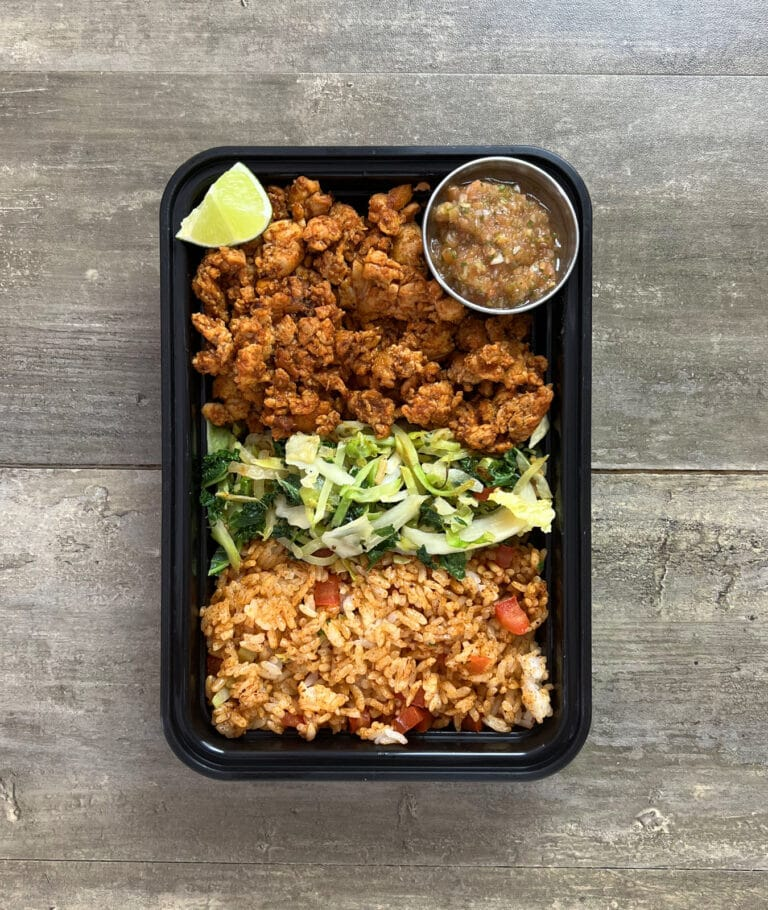

Spicy Chicken Taco Bowl

Ground chicken taco bowls, which are paired with seasoned shredded cabbage, rice, and a side of fresh salsa roja. This meal takes around a total of 40 minutes to make and makes five total servings.
Ingredients
For the Meat
- 2 lbs (908 g) ground chicken (95/5)
- ¾ cup (180 g) tomato sauce
- 1 tsp (3 g) paprika
- 1 tsp (3 g) garlic powder
- 1 tsp (3 g) chili powder
- 1 tsp (3 g) cumin
- ½ tbsp (8 g) oil
- Salt and pepper to taste
For the Cabbage
- 12 oz (563 g) shredded cabbage (You can buy these pre shredded as coleslaw or salad mix)
- ½ tbsp (7 g) oil
- 1 tsp (3 g) garlic powder
- Salt and pepper to taste
For the Rice
- 3¾ cups (563 g) cooked rice
- ½ tbsp (8 g) oil
- 1 tbsp (8 g) chili powder
- 1 tsp (3 g) paprika
- 1 (60 g) Roma tomato diced
For the Salsa Roja
- 4 (240 g) Roma tomatoes
- 1 small (100 g) white onion
- 2 (60 g) jalapeños
- 5 cloves (25 g) garlic
- ½ tbsp (7 g) oil
- ½ bunch (20 g) cilantro
- 2 Tbsp (30 g) lime juice
- Salt to taste
Instructions
For the Rice
- Prepare enough rice to have 3¾ cups of cooked rice. 1 cup of dry rice will yield between 2-3 cups of cooked rice depending on what kind you use.
- Dice 1 Roma tomato and remove the seeds.
- Once the rice has finished, measure out 3¾ cups and add in the oil, chili powder, paprika, diced Roma tomato, and salt to taste.
For the Salsa Roja
- You can either boil, roast, or air fry this. I use the air fryer. Preheat the air fryer to 400°F.
- Wash your tomatoes, jalapeños, and cilantro. Cut the stems off the jalapeños and cut your onion in half. Peel your garlic cloves.
- Add the halved onion, jalapeño peppers, tomatoes, and garlic to a large bowl and drizzle over ½ tbsp of oil and salt to your liking. Toss to coat. The tomatoes have finished cooking when they begin to change color and the skin starts to break.
- Air fry for 8-10 minutes, turning every few minutes until the tomatoes and onions have softened and developed color.
- Add the tomatoes, onions, garlic, jalapeños, ½ bunch of cilantro, and the juice of 1 lime to a blender or food processor Blend until smooth.
- Add salt to taste. Adjust flavor with salt and lime juice as needed.
- Portion out into smaller, separate cups for the meals. You will probably have extra.
For the Shredded Cabbage
- Heat ½ tbsp of olive oil over medium high heat. Add in the shredded cabbage and cook for 4-5 minutes. Season with 1 tsp garlic powder and salt and pepper to taste.
- You can drizzle in a bit of water to create steam and help them cook faster. Once finished, set aside until you are ready to plate.
For the Taco Meat
- Heat ½ tbsp of oil over medium high heat and add in your ground chicken. Allow it to brown and cook.
- Once the chicken is about 90% of the way cooked, add ¾ cup of tomato sauce, 1 tsp paprika, 1 tsp chili powder, 1 tsp cumin, 1 tsp garlic powder, and salt and pepper to taste. Stir to combine and cook for an additional few minutes to cook out the tomato sauce. Taste test and adjust flavors as needed.
Plating
- This recipe makes 5 servings. Divide your chicken, cabbage, and rice evenly between the containers. Each meal gets 1 of your salsa cups as well.
Nutrition
Calories: 481kcal | Carbohydrates: 47g | Protein: 41g | Fat: 14g